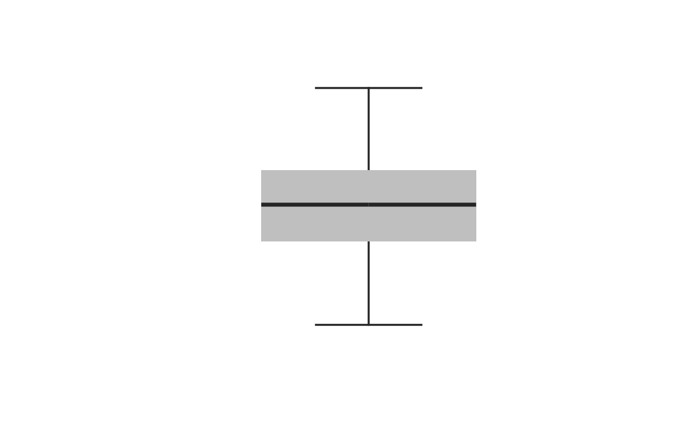

Draws boxplots made of double plot.
biBoxplot(df1, df2 = df1, probs = c(0.01, 0.25, 0.5, 0.75, 0.99), width = 0.2, sta_wd = 0.5, median = NULL, staples = NULL, whiskers = NULL, col_left = "grey75", col_right = col_left, add = FALSE, at = NULL)
| df1 | first set of boxplots. |
|---|---|
| df2 | first set of boxplots. |
| probs | numeric vector of five probabilities with values in [0,1] (see |
| width | a vector giving the relative widths of the boxes making up the plot. |
| sta_wd | staple width. |
| median | a list of aruments passed to lines to custom the median line. |
| staples | a list of aruments passed to lines to custom the staples. |
| whiskers | a list of aruments passed to lines to custom the whiskers. |
| col_left | color of the left boxes. |
| col_right | color of the right boxes. |
| add | a logical. Should the biboxplots be added on the current graph? If |
| at | numeric vector giving the locations where the boxplots should be drawn. Same default behabiour as in |
Do not attempt to assess the distributions. Based on quantiles only.
